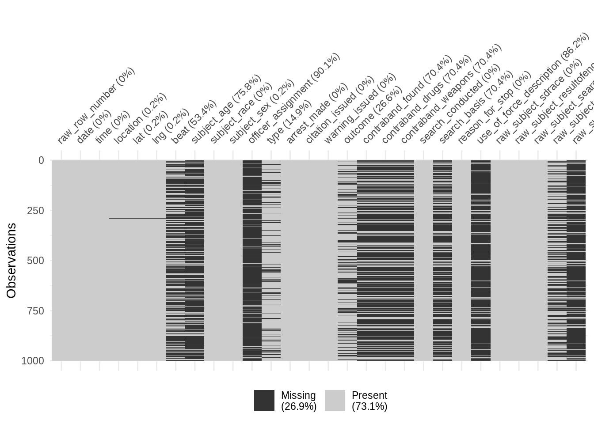
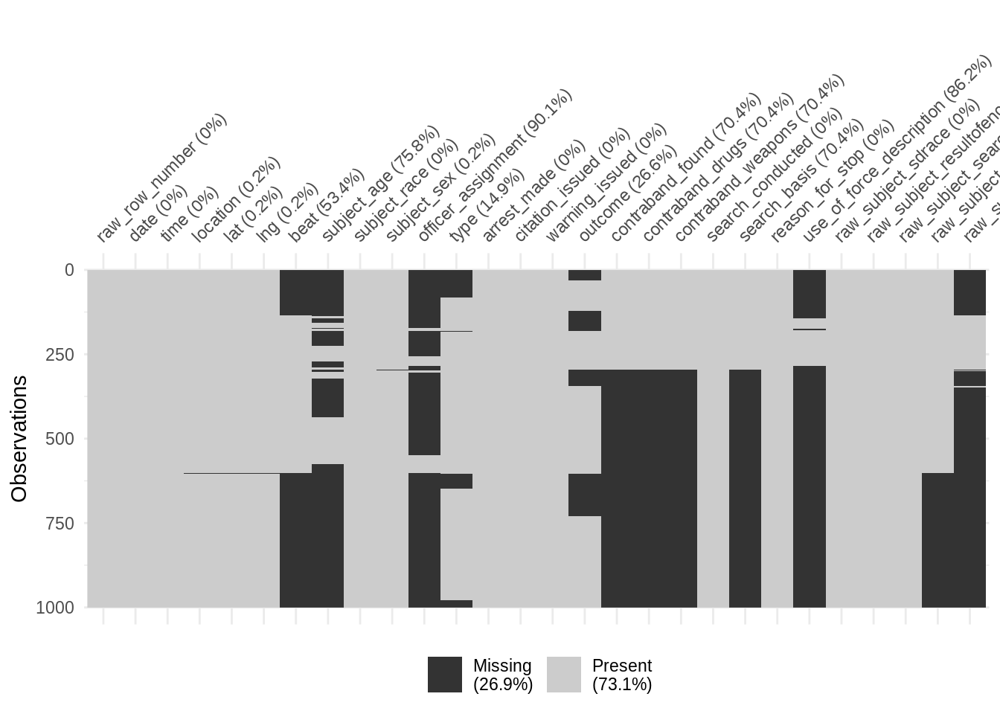
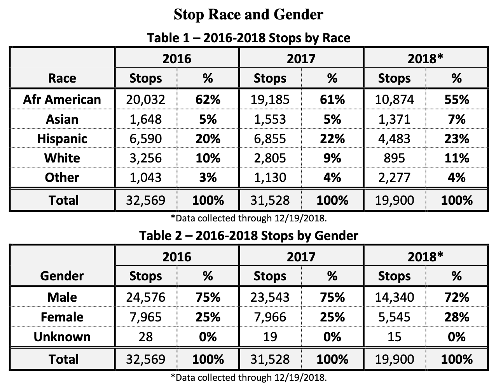

Chapter 9 Inspecting Variables
For this EDA, we’ll work with data on police stops in Oakland, California, that have been pre-cleaned and released by the Stanford Open Policing Project. Because this analysis focuses on categorical data and counts of observations, most of the elements in Huebner, Vach, and le Cessie (2016) don’t really fit. So we’ll follow the checklist from Peng and Matsui (2016).
We’ll also be learning how to use three R packages: skimr and visdat for getting an overview of the data in a dataframe, and dplyr for manipulating dataframes. A good cheatsheet for dplyr is available here: https://raw.githubusercontent.com/rstudio/cheatsheets/master/data-transformation.pdf.
9.1 Packages
library(tidyverse) # for working with the data
library(lubridate) # for working with datetime data
library(vroom) # for quickly reading large CSV files
library(skimr) # generate a text-based overview of the data
library(visdat) # generate plots visualizing data types and missingness
library(tictoc) # for timing how long R takes to do the thing
## Set for the HTML output
## In RStudio, this is overriden by the width of the console pane
options(width = 100) # wider output for skimr9.2 Get the Data
We’ll be using data on police stops in Oakland, California, collected and published by the Stanford Open Policing Project, https://openpolicing.stanford.edu/. We’ll start by making a data folder and downloading the data, if necessary. The URL for the data file can be found on https://openpolicing.stanford.edu/data/. It will also be useful to have the readme handy, https://github.com/stanford-policylab/opp/blob/master/data_readme.md.
Because the next chunk of code might be intimidating to type out, and you need the url, I encourage you to copy and paste.
data_dir = 'data'
target_file = file.path(data_dir, 'oakland.zip')
if (!dir.exists(data_dir)) {
dir.create(data_dir)
}
if (!file.exists(target_file)) {
download.file('https://stacks.stanford.edu/file/druid:yg821jf8611/yg821jf8611_ca_oakland_2020_04_01.csv.zip',
target_file)
}9.3 1. Formulate your question
The Black Lives Matter protests over the last several years have made us aware of the racial aspects of policing. So we’re interested in
- Whether Black people in Oakland might be more likely to be stopped than White people
- Whether Black people who are stopped might be more likely to have contraband
These rough questions will be enough to get us started.
9.4 2. Read in your data
The dataset is a zipped csv or comma-separated value file. CSVs are structured like Excel spreadsheets, but are stored in plain text rather than Excel’s format.
## Not run
## The base R function `read.csv()` can't read a zipped file, and returns gibberish
read.csv(target_file)
## The `read_csv()` function, part of the tidyverse, takes 1.7 seconds on my laptop, but misinterprets several columns as logicals, resulting in parsing problems.
## (What goes wrong? By default, `read_csv()` looks at the first 1,000 rows to guess what the type of each column should be. As we'll see below, columns like `beat` and `subject_age` are missing on the first 5,000+ rows. So `read_csv()` sees 1,000 missing values and guesses that these columns are `logical`, with values `TRUE` or `FALSE`. We could fix this by changing the `guess_max` argument, but that would slow things down even more.)
tic()
read_csv(target_file)
toc()## The vroom package is 10x faster on my laptop and doesn't have the parsing problems
tic()
dataf = vroom(target_file)## Rows: 133,407
## Columns: 28
## Delimiter: ","
## chr [16]: raw_row_number, location, beat, subject_race, subject_sex, officer_assignment, type, outcome, searc...
## dbl [ 3]: lat, lng, subject_age
## lgl [ 7]: arrest_made, citation_issued, warning_issued, contraband_found, contraband_drugs, contraband_weapon...
## date [ 1]: date
## time [ 1]: time
##
## Use `spec()` to retrieve the guessed column specification
## Pass a specification to the `col_types` argument to quiet this messagetoc()## 0.394 sec elapsed# class(dataf$beat)
# class(dataf$subject_age)9.5 3. Check the packaging
Peng and Matsui (2016) use some base R functions to look at dimensions of the dataframe and column (variable) types. skimr is more powerful.
## May take a couple of seconds
skim(dataf)## ── Data Summary ────────────────────────
## Values
## Name dataf
## Number of rows 133407
## Number of columns 28
## _______________________
## Column type frequency:
## character 16
## Date 1
## difftime 1
## logical 7
## numeric 3
## ________________________
## Group variables None
##
## ── Variable type: character ────────────────────────────────────────────────────────────────────────
## skim_variable n_missing complete_rate min max empty n_unique whitespace
## 1 raw_row_number 0 1 1 71 0 133407 0
## 2 location 51 1.00 1 78 0 60723 0
## 3 beat 72424 0.457 3 19 0 129 0
## 4 subject_race 0 1 5 22 0 5 0
## 5 subject_sex 90 0.999 4 6 0 2 0
## 6 officer_assignment 121431 0.0898 5 97 0 20 0
## 7 type 20066 0.850 9 10 0 2 0
## 8 outcome 34107 0.744 6 8 0 3 0
## 9 search_basis 92250 0.309 5 14 0 3 0
## 10 reason_for_stop 0 1 14 197 0 113 0
## 11 use_of_force_description 116734 0.125 10 10 0 1 0
## 12 raw_subject_sdrace 0 1 1 1 0 7 0
## 13 raw_subject_resultofencounter 0 1 7 213 0 315 0
## 14 raw_subject_searchconducted 0 1 2 24 0 34 0
## 15 raw_subject_typeofsearch 52186 0.609 2 112 0 417 0
## 16 raw_subject_resultofsearch 111633 0.163 5 95 0 298 0
##
## ── Variable type: Date ─────────────────────────────────────────────────────────────────────────────
## skim_variable n_missing complete_rate min max median n_unique
## 1 date 2 1.00 2013-04-01 2017-12-31 2015-07-19 1638
##
## ── Variable type: difftime ─────────────────────────────────────────────────────────────────────────
## skim_variable n_missing complete_rate min max median n_unique
## 1 time 2 1.00 0 secs 86340 secs 16:12 1439
##
## ── Variable type: logical ──────────────────────────────────────────────────────────────────────────
## skim_variable n_missing complete_rate mean count
## 1 arrest_made 0 1 0.121 FAL: 117217, TRU: 16190
## 2 citation_issued 0 1 0.394 FAL: 80836, TRU: 52571
## 3 warning_issued 0 1 0.231 FAL: 102545, TRU: 30862
## 4 contraband_found 92250 0.309 0.149 FAL: 35005, TRU: 6152
## 5 contraband_drugs 92250 0.309 0.0844 FAL: 37684, TRU: 3473
## 6 contraband_weapons 92250 0.309 0.0299 FAL: 39928, TRU: 1229
## 7 search_conducted 0 1 0.309 FAL: 92250, TRU: 41157
##
## ── Variable type: numeric ──────────────────────────────────────────────────────────────────────────
## skim_variable n_missing complete_rate mean sd p0 p25 p50 p75 p100 hist
## 1 lat 114 0.999 37.8 0.0284 37.4 37.8 37.8 37.8 38.1 ▁▁▇▁▁
## 2 lng 114 0.999 -122. 0.0432 -122. -122. -122. -122. -119. ▇▁▁▁▁
## 3 subject_age 102724 0.230 33.2 13.3 10 23 29 41 97 ▇▆▃▁▁- 133k rows (observations); 28 columns (variables)
- 16 variables are handled as characters
raw_row_numberhas 1 unique value per row- So it’s probably some kind of identifier
subject_raceandsubject_sexhave just 5 and 2 unique values- These are probably categorical variables represented as characters
- Similarly with
type,outcome, andsearch_basis- Though these have lots of missing values (high
n_missing, lowcomplete_rate)
- Though these have lots of missing values (high
- 1 variable represents the date, and another is
difftime?difftimetells us thatdifftimeis used to represent intervals or “time differences”
- 7 logical variables
- A lot of these look like coded outcomes that we might be interested in, eg,
search_conductedandcontraband_found search_conductedhas no missing values, butcontraband_foundhas a lot of missing values
- A lot of these look like coded outcomes that we might be interested in, eg,
- For our motivating questions
- Good:
subject_raceis 100% complete - Also good:
search_conductedis also 100% complete - Potentially worrisome:
contraband_foundis only 31% complete
- Good:
Let’s use vis_miss(), from visdat, to visualize missing values and check out what’s up with contraband_found.
## This raises a warning about large data
# vis_miss(dataf)
## So we'll use sample_n() to draw a subset
set.seed(2020-09-10)
dataf_smol = sample_n(dataf, 1000)
vis_miss(dataf_smol)
## Arguments in vis_miss() are useful for picking up patterns in missing values
## cluster = TRUE uses hierarchical clustering to order the rows
vis_miss(dataf_smol, cluster = TRUE)
- Several variables related to search outcomes are missing together
contraband_found,contraband_drugs,contraband_weapons,search_basis,use_of_force_description,raw_subject_typeofsearch, andraw_subject_resultofsearch- However,
search_conductedis complete - Critical question: When a search has been conducted, do we know whether contraband was found?
- Semi-translated: when
search_conducted == TRUE, is!is.na(contraband_found)?
9.6 Filter, mutate, count, and pipes
If the answer to this critical question is no (for a lot of rows), then we probably can’t use it to answer our motivating questions. We’ll use 4 tools from the tidyverse to answer this critical question.
filter(dataf, condition1, condition2, ...)- Returns a subset of
datafwhere all of theconditions are true - We’ll use this to construct a subset where
search_conducted == TRUE
- Returns a subset of
mutate(dataf, newvar = f(oldvar))- Adds the column
newvar; it doesn’t changeoldvar - We’ll use this to add a variable,
contraband_known, indicating whethercontraband_foundis missing.
- Adds the column
count(dataf, group1, group2, ...)- Organizes
datafinto groups based on the unique values of thegroupvariables, then - Counts the number of rows in each group
- We’ll use this to count the number of rows in our subset where the value of
contraband_foundis known or missing
- Organizes
- The pipe
%>%- Lets us string together a series of function calls
- The output of one function gets passed as the first argument to the next function
- The tidyverse functions are set up to be pipe-friendly: they take a dataframe as the first argument, and output a dataframe
- We’ll use this to put the function calls together into a single analysis pipeline
- More functional: We won’t be changing
dataf - Less cluttered: We don’t need to create intermediate variables for each step
- More functional: We won’t be changing
dataf %>%
filter(search_conducted) %>%
mutate(contraband_known = !is.na(contraband_found)) %>%
count(search_conducted, contraband_known)## # A tibble: 1 x 3
## search_conducted contraband_known n
## <lgl> <lgl> <int>
## 1 TRUE TRUE 411579.7 4. Look at the top and the bottom of your data
With 28 columns, the dataframe is too wide to print in a readable way. We could use the select() function (from the tidyverse) to extract and print a few columns at a time.
Instead we’ll use the base R function View() in an interactive session. This shows us an Excel-like spreadsheet presentation of a dataframe.
View() can cause significant problems if you use it with a large dataframe on a slower machine. So we’ll use a pipe: first extract the head() or tail() of the dataset, and then View() it. We’ll also go ahead and view dataf_smol, the subset we created for visdat above.
dataf %>%
head() %>%
View()
dataf %>%
tail() %>%
View()
View(dataf_smol)Some of my observations:
- The ID variable
raw_row_numbercan’t be turned into a numeric value locationis a mix of addresses and intersections (“Bond St @ 48TH AVE”)- If we were going to generate a map using this column, geocoding might be tricky
- Fortunately we also get latitude and longitude columns
use_of_force_descriptiondoesn’t seem to be a descriptive text field; instead it seems to be mostly missing or “handcuffed”
We can also use skimr to check data quality by looking at the minimum and maximum values. Do these ranges make sense for what we expect the variable to be?
skim(dataf)## ── Data Summary ────────────────────────
## Values
## Name dataf
## Number of rows 133407
## Number of columns 28
## _______________________
## Column type frequency:
## character 16
## Date 1
## difftime 1
## logical 7
## numeric 3
## ________________________
## Group variables None
##
## ── Variable type: character ────────────────────────────────────────────────────────────────────────
## skim_variable n_missing complete_rate min max empty n_unique whitespace
## 1 raw_row_number 0 1 1 71 0 133407 0
## 2 location 51 1.00 1 78 0 60723 0
## 3 beat 72424 0.457 3 19 0 129 0
## 4 subject_race 0 1 5 22 0 5 0
## 5 subject_sex 90 0.999 4 6 0 2 0
## 6 officer_assignment 121431 0.0898 5 97 0 20 0
## 7 type 20066 0.850 9 10 0 2 0
## 8 outcome 34107 0.744 6 8 0 3 0
## 9 search_basis 92250 0.309 5 14 0 3 0
## 10 reason_for_stop 0 1 14 197 0 113 0
## 11 use_of_force_description 116734 0.125 10 10 0 1 0
## 12 raw_subject_sdrace 0 1 1 1 0 7 0
## 13 raw_subject_resultofencounter 0 1 7 213 0 315 0
## 14 raw_subject_searchconducted 0 1 2 24 0 34 0
## 15 raw_subject_typeofsearch 52186 0.609 2 112 0 417 0
## 16 raw_subject_resultofsearch 111633 0.163 5 95 0 298 0
##
## ── Variable type: Date ─────────────────────────────────────────────────────────────────────────────
## skim_variable n_missing complete_rate min max median n_unique
## 1 date 2 1.00 2013-04-01 2017-12-31 2015-07-19 1638
##
## ── Variable type: difftime ─────────────────────────────────────────────────────────────────────────
## skim_variable n_missing complete_rate min max median n_unique
## 1 time 2 1.00 0 secs 86340 secs 16:12 1439
##
## ── Variable type: logical ──────────────────────────────────────────────────────────────────────────
## skim_variable n_missing complete_rate mean count
## 1 arrest_made 0 1 0.121 FAL: 117217, TRU: 16190
## 2 citation_issued 0 1 0.394 FAL: 80836, TRU: 52571
## 3 warning_issued 0 1 0.231 FAL: 102545, TRU: 30862
## 4 contraband_found 92250 0.309 0.149 FAL: 35005, TRU: 6152
## 5 contraband_drugs 92250 0.309 0.0844 FAL: 37684, TRU: 3473
## 6 contraband_weapons 92250 0.309 0.0299 FAL: 39928, TRU: 1229
## 7 search_conducted 0 1 0.309 FAL: 92250, TRU: 41157
##
## ── Variable type: numeric ──────────────────────────────────────────────────────────────────────────
## skim_variable n_missing complete_rate mean sd p0 p25 p50 p75 p100 hist
## 1 lat 114 0.999 37.8 0.0284 37.4 37.8 37.8 37.8 38.1 ▁▁▇▁▁
## 2 lng 114 0.999 -122. 0.0432 -122. -122. -122. -122. -119. ▇▁▁▁▁
## 3 subject_age 102724 0.230 33.2 13.3 10 23 29 41 97 ▇▆▃▁▁- Date range is April 1, 2013 to December 31, 2017
- If we break things down by year, we should expect 2013 to have fewer cases
- For some purposes, we might need to exclude 2013 data:
filter(dataf, date >= '2014-01-01')
- Age range is from 10 years old (!) to 97 (!)
- Median (
p50) is 29; 50% of values are between 23 and 41 - For some purposes, we might need to restrict the analysis to working-age adults:
filter(dataf, subject_age >= 18, subject_age < 65)
- Median (
9.8 5. Check your “n”s (and) 6. Validate with at least one external data source
- Peng and Matsui (2016) use an air quality example with a regular sampling rate,
- so they can calculate exactly how many observations they should have.
- We can’t do that here
- So we’ll combine steps 5 and 6 together
- A web search leads us to this City of Oakland page on police stop data: https://www.oaklandca.gov/resources/stop-data
The page mentions a Stanford study that was released in June 2016
Recall we got our data from the Stanford Open Policing Project
Our data run through December 2017
So there’s a good chance we’re using a superset of the “Stanford study” data
The page links to this report: https://cao-94612.s3.amazonaws.com/documents/OPD-Racial-Impact-Report-2016-2018-Final-16Apr19.pdf
Page 8 has two summary tables that we can compare to our data

Figure 9.1: Screenshot of the two summary tables from the Oakland report. Source: https://cao-94612.s3.amazonaws.com/documents/OPD-Racial-Impact-Report-2016-2018-Final-16Apr19.pdf, page 8
9.9 From dates to years
- Our data has the particular date of each stop
- We need to extract the year of each stop
lubridate::year()does exactly this
- Filter to the years in our data that overlap with the tables
- And then aggregate by year (and gender) using
count
- We need to extract the year of each stop
dataf %>%
mutate(year = year(date)) %>%
filter(year %in% c(2016, 2017)) %>%
count(year)## # A tibble: 2 x 2
## year n
## <dbl> <int>
## 1 2016 30268
## 2 2017 30715dataf %>%
mutate(year = year(date)) %>%
filter(year %in% c(2016, 2017)) %>%
count(year, subject_sex)## # A tibble: 6 x 3
## year subject_sex n
## <dbl> <chr> <int>
## 1 2016 female 7677
## 2 2016 male 22563
## 3 2016 <NA> 28
## 4 2017 female 7879
## 5 2017 male 22818
## 6 2017 <NA> 18- For both years, we have fewer observations than the report table indicates
Could our data have been pre-filtered?
Let’s check the documentation for our data: https://github.com/stanford-policylab/opp/blob/master/data_readme.md#oakland-ca
“Data is deduplicated on raw columns contactdate, contacttime, streetname, subject_sdrace, subject_sex, and subject_age, reducing the number of records by ~5.2%”
- The difference with the report is on this order of magnitude,
- But varies within groups by several percentage points
- So deduplication might explain the difference
- But in a more serious analysis we might want to check, eg, with the Stanford Open Policing folks
## Men in 2016 in the report vs. our data: 8.2%
(24576 - 22563) / 24576## [1] 0.08190918## Women in 2016 in the report vs. our data: 3.6%
(7965 - 7677) / 7965## [1] 0.03615819## All of 2016 in the report vs. our data: 7.1%
(32569 - 30268) / 32569## [1] 0.070659.10 7. Make a plot
Plotting is a whole additional discussion. We’ll talk about it next week.
9.11 8. Try the easy solution first
We are interested in two rough questions:
- Whether Black people in Oakland might be more likely to be stopped than White people
- Whether Black people who are stopped might be more likely to have contraband
- The easy solution is to count rows, mostly using the tools we’ve already developed.
- We’ll use
mutate()aftercount()to calculate shares, ie, what fraction of the total are in each group - We’ll also introduce the function
arrange(), to sort the dataframe from greatest to smallest share - And
group_by()to calculate shares within racial groups
- We’ll use
9.11.1 Number of stops, by race
dataf %>%
count(subject_race) %>%
mutate(share = n / sum(n)) %>%
arrange(desc(share))## # A tibble: 5 x 3
## subject_race n share
## <chr> <int> <dbl>
## 1 black 78925 0.592
## 2 hispanic 26257 0.197
## 3 white 15628 0.117
## 4 asian/pacific islander 8099 0.0607
## 5 other 4498 0.0337- Police stop demographics
- 60% of subjects stopped by police are Black
- 19% are Hispanic
- 12% are White
- 6% are API
- Oakland demographics: https://en.wikipedia.org/wiki/Oakland,_California#Race_and_ethnicity
- 23% of residents are Black
- 27% are Hispanic
- 29% are non-Hispanic White
- 15% are Asian
- Comparing the two
- Blacks are severely overrepresented in police stops
- Hispanics and API folks are slightly underrepresented
- Whites are significantly underrepresented
9.11.2 Contraband search results, by race
As a preliminary question, what fraction of stops had a search? Are there disparities by race there? We can answer the first question using tools we already have.
## What fraction of stops had a search?
## 31%
dataf %>%
count(search_conducted) %>%
mutate(share = n / sum(n))## # A tibble: 2 x 3
## search_conducted n share
## <lgl> <int> <dbl>
## 1 FALSE 92250 0.691
## 2 TRUE 41157 0.309Across all subjects, 31% of stops involved a search.
For the other question, we need to calculate something like share within racial groups. That is, among all stops of Black folks, what fraction involved a search? The group_by() function divides the dataset into groups that other tidyverse functions respect. Specifically, count() and mutate() will both analyze each group defined by subject_race separately.
After using group_by(), it’s good practice to always call ungroup(). We don’t want to accidentally work with the grouped version in another part of our analysis.
## What fraction of stops had a search, by race?
## Note that, for each racial group, `share` adds up to 100%.
##
## For all groups, most stops didn't involve a search;
## For Black subjects, 38% of stops involved a search;
## For White subjects, 15% of stops involved a search.
dataf %>%
group_by(subject_race) %>%
count(search_conducted) %>%
mutate(share = n / sum(n)) %>%
ungroup()## # A tibble: 10 x 4
## subject_race search_conducted n share
## <chr> <lgl> <int> <dbl>
## 1 asian/pacific islander FALSE 6795 0.839
## 2 asian/pacific islander TRUE 1304 0.161
## 3 black FALSE 48900 0.620
## 4 black TRUE 30025 0.380
## 5 hispanic FALSE 19535 0.744
## 6 hispanic TRUE 6722 0.256
## 7 other FALSE 3792 0.843
## 8 other TRUE 706 0.157
## 9 white FALSE 13228 0.846
## 10 white TRUE 2400 0.154For all groups, most stops didn’t involve a search
For Black subjects, 38% of stops involved a search
For White subjects, 15% of stops involved a search
So police were much more likely to search stopped Black subjects than White subjects
Finally, let’s consider our second main question: contraband results from searches. Note that we want to restrict ourselves to only stops where search_conducted is true.
## Contraband results from searches, by race
dataf %>%
filter(search_conducted) %>%
count(subject_race, contraband_found) %>%
group_by(subject_race) %>%
mutate(share = n / sum(n)) %>%
ungroup() %>%
filter(contraband_found)## # A tibble: 5 x 4
## subject_race contraband_found n share
## <chr> <lgl> <int> <dbl>
## 1 asian/pacific islander TRUE 176 0.135
## 2 black TRUE 4364 0.145
## 3 hispanic TRUE 1116 0.166
## 4 other TRUE 85 0.120
## 5 white TRUE 411 0.171- For Black subjects who were searched, contraband was found 15% of the time
- For White subjects, 17% of the time
This preliminary analysis indicates that Black subjects were more likely to be searched than White subjects; but, when they were searched, White subjects were more likely to have contraband.
9.12 9. Follow up
- There are several directions we could take this analysis:
- Investigate outstanding questions about quality and reliability of the data
- eg, follow up with Stanford Open Policing Project about the difference in row counts
- Fits with risk management (spiral model): spend a little more time checking to make sure the data aren’t corrupted
- Break down our question into more fine-grained analyses
- eg, the Oakland web site and report talk about policy changes; do we see changes by year in the data?
- Fits with epicycle of analysis: refine and specify research questions
- Apply more sophisticated statistical analysis
- eg, a regression model to control for age, gender, and other covariates
- Fits with phenomena development: reducing data, eliminating noise, in order to identity local phenomena
- Investigate outstanding questions about quality and reliability of the data
9.13 Discussion questions
Time permitting, we’ll discuss these during class. But more likely we’ll talk about them via Slack.
Suppose you’ve conducted this EDA because you’re working with an activist organization that promotes defunding the police and prison abolition. Should you share the preliminary findings above with your organization contacts?
What influence should the following factors make to your answer?
- Funding: Whether you’re being paid as a consultant vs. volunteering your expertise
- Values: Your own views about policing and prisons
- Relationships: Whether you are friends with members of the activist organization and/or police
- Communications: The degree to which you can control whether and how the organization will publish your preliminary findings
- Timeliness: Whether these findings are relevant to a pending law or policy change
What other factors should be taken into account as you decide whether to share your findings? Or not taken into account?
How has this “raw data” been shaped by upstream decisions? (Think of Leonelli’s relational account of data.)
9.14 Lab
The lab related to this material is available at https://github.com/data-science-methods/lab-w04-eda.
References
Huebner, Marianne, Werner Vach, and Saskia le Cessie. 2016. “A Systematic Approach to Initial Data Analysis Is Good Research Practice.” The Journal of Thoracic and Cardiovascular Surgery 151 (1): 25–27. https://doi.org/10.1016/j.jtcvs.2015.09.085.
Peng, Roger D., and Elizabeth Matsui. 2016. The Art of Data Science: A Guide for Anyone Who Works with Data. Leanpub. http://leanpub.com/artofdatascience.